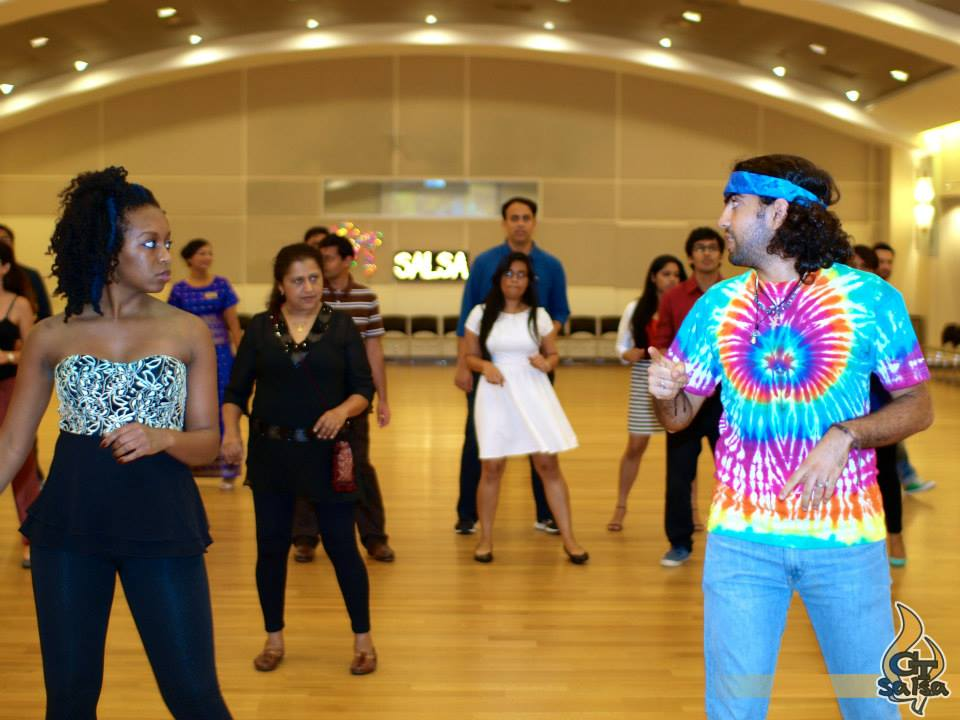

The Origin Story
I started college with a strong background in math and science. I was excited to be accepted into The Georgia Tech in my hometown, and computer science was recommended to me, so I went for it! It was quite challenging at first because I didn't have a great support system. My parents weren't engineers and neither were my relatives, so I started to think that maybe computer science was too hard for me. I believed that I should use my CS background to help me become an excellent User Experience Designer, but then I received an opportunity to become a Software Engineer Intern at CNN in the summer of 2016. I was able to complete my first real project, receive mentorship, and learn from the best in the company. It changed everything for me. I transitioned into a full-time role in 2017 working at the CNN Center in downtown Atlanta. Through my 5 years of being a full-time professional in the tech industry, I was able to work on large web applications, meet some awesome devs, speak on career panels, attend conferences, do some fun freelance work and even become a mentor for interns.
I started college with a strong background in math and science. I was excited to be accepted into The Georgia Tech in my hometown, and computer science was recommended to me, so I went for it! It was quite challenging at first because I didn't have a great support system. My parents weren't engineers and neither were my relatives, so I started to think that maybe computer science was too hard for me. I believed that I should use my CS background to help me become an excellent User Experience Designer, but then I received an opportunity to become a Software Engineer Intern at CNN in the summer of 2016. I was able to complete my first real project, receive mentorship, and learn from the best in the company. It changed everything for me. I transitioned into a full-time role in 2017 working at the CNN Center in downtown Atlanta. Through my 5 years of being a full-time professional in the tech industry, I was able to work on large web applications, meet some awesome devs, speak on career panels, attend conferences, do some fun freelance work and even become a mentor for interns.
Here are some impactful moments of my career!
Career Panels
I had the pleasure of contributing to a few career panels for interns and women in tech. My favorite discussion was when
I was able to sit with a group of interns who were near the end of completing the technology program at Turner (Now Warner Media).
I loved providing guidance and inspiration to those who are early in their career. The interns were able to ask questions about
how I got started, my experience with the company, and more details about my role. My #1 advice for those who are early in their tech career is to
get to know the people around you, ask questions, and meet more people. You will learn so much and it will guide you to where you want to be.
Shooting an Interview

For the first time in my life, I experienced what it was like to be filmed on a professional studio set. There was a big mic hanging above my head, several people managing the cameras and lighting equipment, and a big backdrop with me in the middle.
I was honored to be a part of this short film created by Turner Broadcasting, I was able to speak about the internship program that transitioned me to my career at CNN.
The program itself consisted of orientation, meetups, many tours through the facilities, and the opportunity to speak with current leaders in the company. It was a fantastic experience to kick start anyone's career and I was blessed to be a part of it.
Speaking at a Tech Conference

Conferences are always a good time. The free company swag, the workshops, geeking out over the new tech, the gathering of so many people.... the energy is always buzzing. I have enjoyed each and every conference that I've had the privelege of attending.
For my first talk I wanted to contribute something a little different than the usual technical workshop. I chose to talk about a fun and less popular animation library. I was nervous when I began, but by the end I could really feel the support of the attendees and I walked away
with a sense of accomplishment and a new experience. This would be my first step towards giving more technical talks and presentations in the future.
Teaching and Mentoring
In college, I had the opportunity to teach part-time to children from K-5 how to use coding programs like Scratch and
MIT's App Inventor. I didn't know at the time that I would continue to do this after college, I thought it would be a fun summer job at first,
but when I saw the excitement in the childrens faces when they got something to work, it was hard not to share the same excitement. It felt good to help,
especially if I could change someone's mind about being in the tech industry.
In 2019, I found another opportunity to teach, but for a full-stack bootcamp. I spend most Saturday mornings teaching others about the fundamentals of various technologies, my favorite one being JavaScript fundamentals. We have a lot of beginner-level students enter the bootcamp through this course, so I felt I had the most impact here. After teaching my first course, I realized that the same excitement that I saw in the children could be found in eager adults as well. I haven't stopped teaching since then. I was able to help others, but I understood the tools and languages I was using on a greater level that before I began teaching it. Learning how to code is not too different from learning a foreign language, it takes lot of patience, but I know that after a while, the dots will connect and the light bulb will turn on. You just have to keep going. So I try to be as patient with my students as I would want someone to be with me.
In 2019, I found another opportunity to teach, but for a full-stack bootcamp. I spend most Saturday mornings teaching others about the fundamentals of various technologies, my favorite one being JavaScript fundamentals. We have a lot of beginner-level students enter the bootcamp through this course, so I felt I had the most impact here. After teaching my first course, I realized that the same excitement that I saw in the children could be found in eager adults as well. I haven't stopped teaching since then. I was able to help others, but I understood the tools and languages I was using on a greater level that before I began teaching it. Learning how to code is not too different from learning a foreign language, it takes lot of patience, but I know that after a while, the dots will connect and the light bulb will turn on. You just have to keep going. So I try to be as patient with my students as I would want someone to be with me.
Here is a fun fact about me!
Salsa Dancing

My dancing journey started in 2012, when I joined the Georgia Tech Salsa Club. I didn't know that in only two years that I'd become the president and that I'd meet such an amazing group of people.
I organized board meetings, club events, classes at the rec center, and promoted the club each semester. The more fun parts of my job were teaching beginner classes, carpooling to salsa socials in the city,
performing, and learning new dances. The Atlanta Latin Dance scene has changed a lot over the past decade, but it still feels like home. A place where you can kick your shoes off and put your dancing shoes on
because everyone is ready to dance the night away.